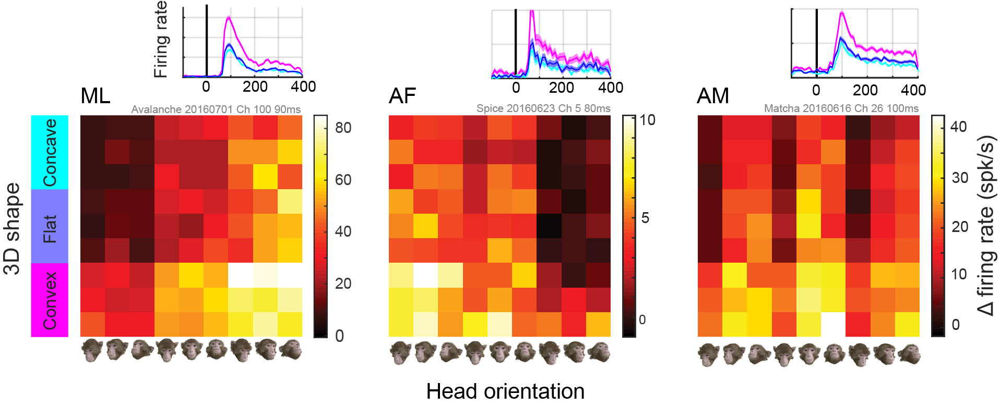
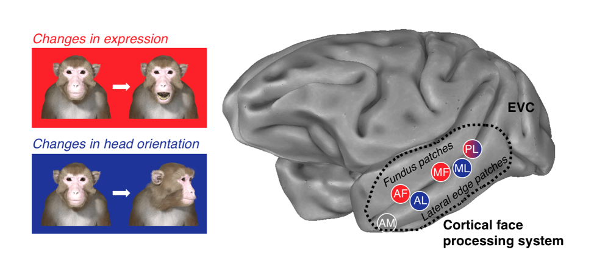
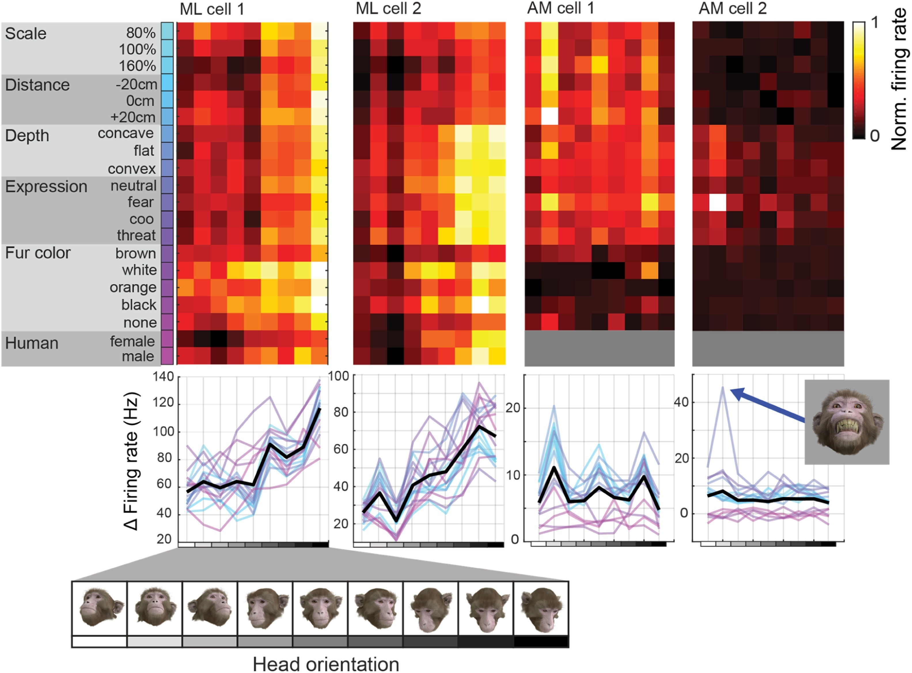

MF3D Research¶
Visual stimuli generated by the MF3D project are being actively used by neuroscience research labs across the world. Below are a subset of the published articles and conference abstracts reporting data from experiments using this scientific resource.
Publications¶
- Taubert J, Japee S, Murphy AP, Tardiff CT, Koele EA, Kumar S, Leopold DA, & Ungerleider LG (2020). Parallel processing of facial expression and head orientation in the macaque brain. J.Neurosci.
- Khandhadia AP, Murphy AP, Romanksi LM, Bizley JK, Leopold DA (2019). Audiovisual Integration in Anterior Fundus Face Patch. Soc. Neurosci.
- Murphy AP & Leopold DA, (2019). A parameterized digital 3D model of the Rhesus macaque face for investigating the visual processing of social cues. J.Neurosci.Methods
Research summaries¶
Natural stereoscopic depth amplifies responses of face-selective neurons in the macaque.¶
{kind=link}
Murphy AP, Khandhadia AP, Esch EM, Leopold DA (in prep).
This study used stereoscopic 3D presentations of the macaque avatar faces to generate realistic depth percepts. Chronic exctracellular neural recordings from three of the face-selective regions of inferotemporal (IT) cortex revealed that…
Parallel processing of facial expression and head orientation in the macaque brain.¶
{kind=link}
Taubert J, Japee S, Murphy AP, Tardiff CT, Koele EA, Kumar S, Leopold DA, & Ungerleider LG (2020).
In this study, the authors investigated the processing of changeable facial information using a functional MRI-adaptation paradigm in awake male macaques. They found a double dissociation of face-selective regions in the superior temporal sulcus (STS) processing facial expression and those processing head orientation. The face-patches in the STS fundus were most sensitive to facial expression, as was the amygdala, whereas those on the lower, lateral edge of the sulcus were most sensitive to head orientation.
Audiovisual Integration in Anterior Fundus Face Patch.¶

Khandhadia AP, Murphy AP, Romanksi LM, Bizley JK, Leopold DA (2019).
In this study, the authors recorded single unit activity from the anterior fundus (AF) face-patch of the STS while subjects viewed animated sequences of the macaque avatar performing various vocalizations with varying head direction, with and without audio. Neurons in AF were modulated by both head direction and vocalization type.
A parameterized digital 3D model of the Rhesus macaque face for investigating the visual processing of social cues.¶
{kind=link}
Murphy AP & Leopold DA, (2019).
This methods paper describes the creation of the MF3D avatar model and stimuli sites, but also reports preliminary data from chronic extracellular recordings from neurons in three of the face-selective regions of the macaque STS. Unlike typical object vision experiments, a large number of dimensions of facial appearance were co-varied. Many of the neurons recorded exhibited sensitivity to head orientation, which was typically robust across variations in the other parameters. Surprisingly, some cells that initially appeared not to be driven by any stimuli were strongly modulated by highly specific combinations of variables.
Collaborators¶
We’re always keen to hear how we might be able to further develop MF3D to cater to specific research needs. If you have a research question that can’t be addressed using the publicly available MF3D resources then we encourage you to contact us to discuss the possibility of collaborating on further developments of MF3D to meet your research needs.
Acknowledgements¶


This work was funded by the National Institute of Mental Health (NIMH) and utilized the Neurophysiology Imaging Facility (NIF) and NIH’s HPC Biowulf cluster resources. Stimuli are hosted on Figshare under the Creative Commons CC-BY-NC 4.0 license, while software tools are hosted on GitHub under the GNU General Public License GNU GPLv3. All visual stimulus renders were generated using the open-source software Blender.